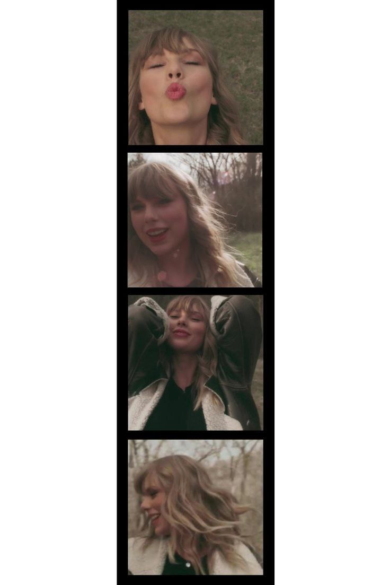

Characters
Julie
Sam
Julie has her life all planned out and ready to achieved everything she dreamt of with her boyfriend "Sam". But suddendy, Sam passed away in a horrible accident which happend while trying to pick up Julie from the airport. Julie blamed herself and began to self-loathe. She called Sam just to hear his voicemail but Sam picked up.
It was a miracle and unbelievable. I mean how could a dead person picked up the phone? Turned out Julie and Sam phones were connected to each other but if one didn't pick up, the connection will be lost forever. Julie decided to take the chance to say goodbye to Sam when she wanted to because Sam left the world out of blue.
Rating
10/10
would not read it again for my mental health

Quotes from "You've reached Sam" that I love
"Please don't forget me and all the things we did."
"I missed you." I missed you infinity.
"He was the music. And I was the words."
"You never said goodbye." "That's because I never thought I had to..."
"If ending is this painful, I don't know if this worth it all"
"But sometimes you just wake up. No matter how hard you try not to."
"You're my entire world, Julie. And one day, maybe I'll only be a small piece of yours. I hope you never lose that piece."